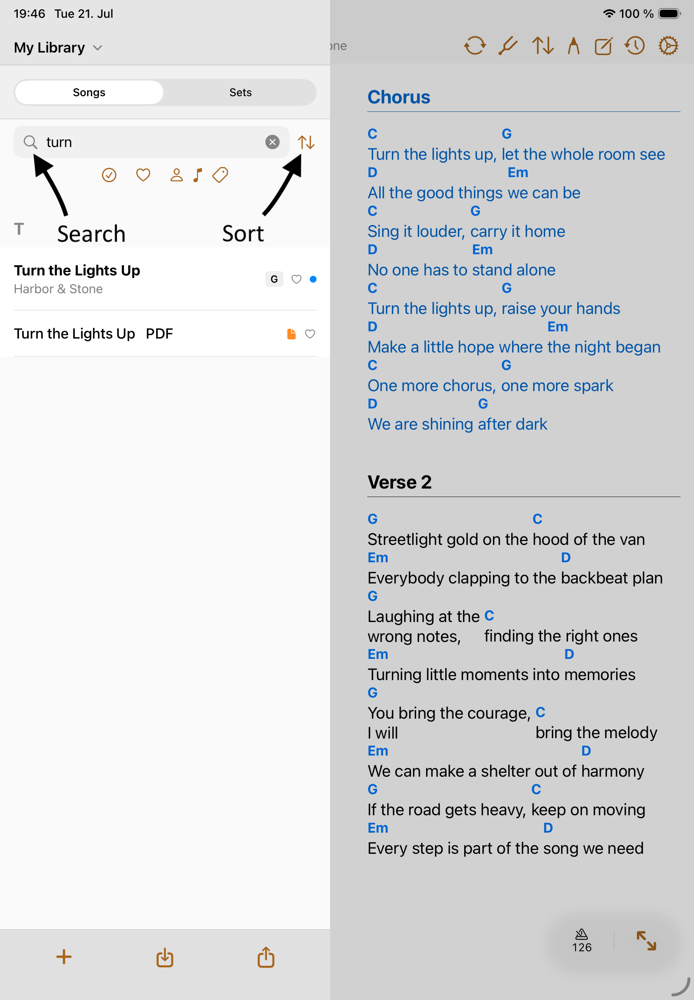
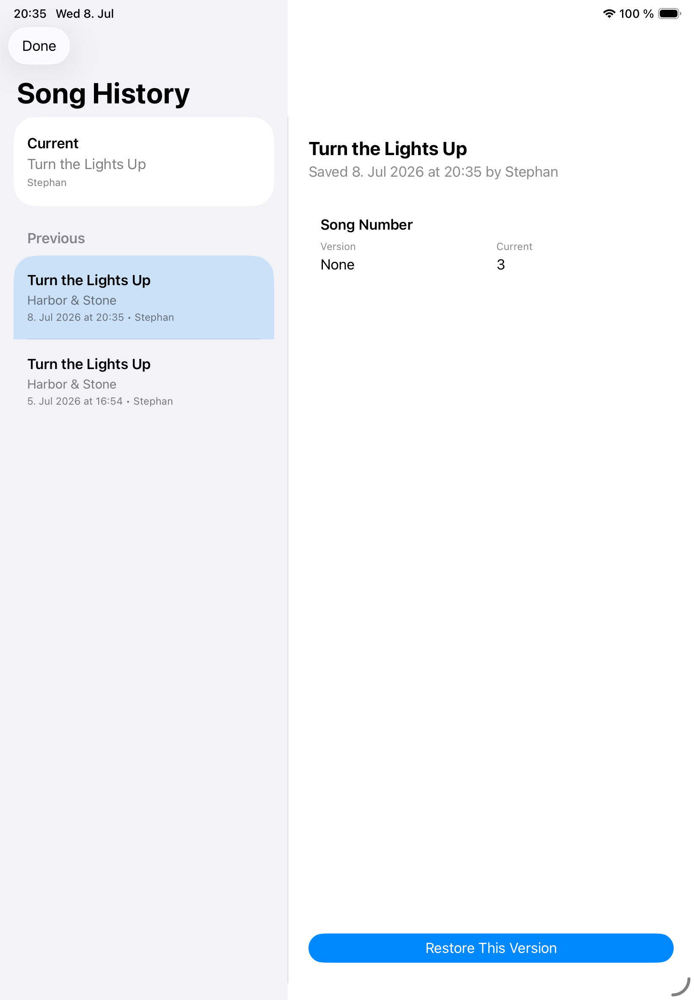

Library
Song Library
The library is where Songivo keeps your charts searchable, filtered, and ready for setlists.
Use the library panel to choose the active library context, find songs, and open the chart you want to rehearse or perform.

Find songs quickly
- Search by title, artist, and available metadata.
- Sort the list when title, artist, key, or other metadata is the fastest way to find a chart.
- Use song numbers when your paper binder, rehearsal plan, or band workflow depends on numbered charts.
- Keep tags consistent so filtering remains useful as the library grows.

Manage song records
- Open a song from the selected library.
- Use Edit Song to update title, artist, key, BPM, duration, tags, links, optional fields, and chart source.
- Favorite songs you need often, especially rehearsal staples.
- Duplicate a song when you need a separate arrangement rather than overwriting the original.
- Delete only from the library where the song should be removed.
Song history
- Review up to five previous versions of a song and restore the version you need.
- Choose a previous version, review its changes, then select Restore This Version.

Copy between libraries
Copy songs between My Library and band libraries only when you intentionally want separate records. Songivo keeps personal and band material independent, so changes in one library do not silently rewrite the other.
If Songivo finds a duplicate title during copy or import, review the prompt before creating another copy.